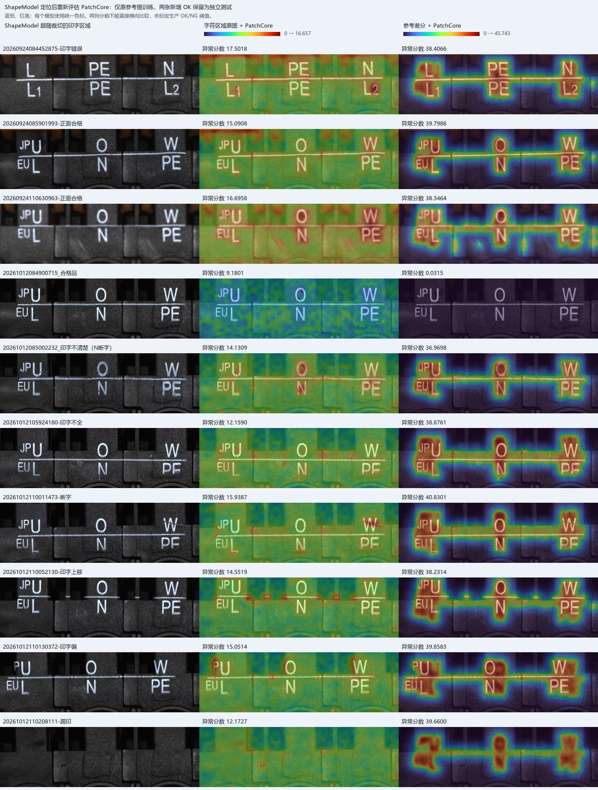

使用已验证的 10 张 ShapeModel 跟随裁切结果，每张 680 × 205 像素；逐张重新计算源图变换并验证与保存的裁切一致。两套 PatchCore 都按新的输入区域重新建立特征库，仅使用原参考良品，新增两张 OK 未参与训练。输入补边至 704 × 224，保持原始像素尺度。ResNet18、layer1/layer2、10% coreset、5 邻居，与上一试验一致。
原图模型输入为紧凑的彩色印字区域，并未宣称所有壳体像素都被清除；差分模型使用灰度差、边缘差及笔画掩膜差。印字位置始终保留在壳体坐标中，没有按文字再次对齐。二值化沿用 ShapeModel 提取阶段的亮度/对比度参数。
字符区域原图模型：两张独立 OK 分数为 15.09、16.70；7 张 NG 中，有 1 张高于这两张 OK 的最高分。全部已知 OK/NG 是否可用单一分数阈值分开：否，分数存在重叠。
参考差分模型：两张独立 OK 分数为 39.80、38.35；7 张 NG 中，有 2 张高于这两张 OK 的最高分。全部已知 OK/NG 是否可用单一分数阈值分开：否，分数存在重叠。
| 图片 | 字符区域原图模型 | 参考差分模型 | 状态 |
|---|---|---|---|
| 20260924084452875-印字错误 | 17.5018 | 38.4066 | 独立于训练图；未标定判定阈值 |
| 20260924085901993-正面合格 | 15.0908 | 39.7986 | 独立于训练图；未标定判定阈值 |
| 20260924110630963-正面合格 | 16.6958 | 38.3464 | 独立于训练图；未标定判定阈值 |
| 20261012084900715_合格品 | 9.1801 | 0.0315 | 参考自检 |
| 20261012085002232_印字不清楚（N断字） | 14.1309 | 36.9698 | 独立于训练图；未标定判定阈值 |
| 20261012105924180-印字不全 | 12.1590 | 38.8761 | 独立于训练图；未标定判定阈值 |
| 20261012110011473-断字 | 15.9387 | 40.8301 | 独立于训练图；未标定判定阈值 |
| 20261012110052130-印字上移 | 14.5519 | 38.2314 | 独立于训练图；未标定判定阈值 |
| 20261012110130372-印字偏 | 15.0514 | 39.8583 | 独立于训练图；未标定判定阈值 |
| 20261012110208111-漏印 | 12.1727 | 39.6600 | 独立于训练图；未标定判定阈值 |

结果 CSV · 参数及详细记录。rgb/residual 目录各自保存模型、输入、原始浮点热力图、彩色热力图和叠加图。